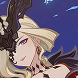
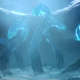

Chương I · Màn III
Ngôi Sao Đang Đến
Nhiệm vụ Ma Thần — Liyue
Nhân vật xuất hiện
 Nhân vật chính · Nhà Lữ HànhLumineNhà Lữ Hành đến từ thế giới khác. Bị vị thần lạ mặt phong ấn và cướp mất người anh song sinh, cô bắt đầu hành trình đi tìm Bảy Vị Thần của Teyvat.
Nhân vật chính · Nhà Lữ HànhLumineNhà Lữ Hành đến từ thế giới khác. Bị vị thần lạ mặt phong ấn và cướp mất người anh song sinh, cô bắt đầu hành trình đi tìm Bảy Vị Thần của Teyvat. Bạn đồng hànhPaimonĐược Lumine cứu khỏi chết đuối hai tháng trước, Paimon tự nhận làm người dẫn đường cho cô. Hay ăn, hay nói, và rất ghét bị gọi là “thực phẩm dự trữ”.
Bạn đồng hànhPaimonĐược Lumine cứu khỏi chết đuối hai tháng trước, Paimon tự nhận làm người dẫn đường cho cô. Hay ăn, hay nói, và rất ghét bị gọi là “thực phẩm dự trữ”.- “Ngọc Hành Tinh” của Thất Tinh LiyueKeqingGặp Lumine bên máy Guizhong ở Thiên Hoành Sơn. Thẳng thắn, “bất kính với thần tiên”, tin rằng thời đại của tiên nhân đã qua.
 “Thiên Quyền” của Thất Tinh LiyueNingguangMời Lumine lên Quần Ngọc Các, chỉ cho cô dấu vết nghiên cứu Bách Vô Cấm Kỵ Lục của Fatui. Từ bỏ Quần Ngọc Các để trấn áp Ma Thần.
“Thiên Quyền” của Thất Tinh LiyueNingguangMời Lumine lên Quần Ngọc Các, chỉ cho cô dấu vết nghiên cứu Bách Vô Cấm Kỵ Lục của Fatui. Từ bỏ Quần Ngọc Các để trấn áp Ma Thần.- Thư ký Nguyệt Hải ĐìnhGanyuSứ giả của Thiên Quyền Tinh, con lai giữa loài người và Kỳ Lân. Tặng Bách Hợp Lưu Ly cho Điển Lễ Tiễn Tiên.
 Khách của Vãng Sinh ĐườngZhongliCùng Lumine đi chặng cuối chuẩn bị Điển Lễ Tiễn Tiên, hiểu biết sâu rộng về lịch sử Liyue.
Khách của Vãng Sinh ĐườngZhongliCùng Lumine đi chặng cuối chuẩn bị Điển Lễ Tiễn Tiên, hiểu biết sâu rộng về lịch sử Liyue. Quan Chấp Hành FatuiChildeTìm đến Hoàng Kim Ốc để đoạt Gnosis, giao chiến với Lumine, rồi dùng Bách Vô Cấm Kỵ Lục đánh thức Ma Thần Osial.
Quan Chấp Hành FatuiChildeTìm đến Hoàng Kim Ốc để đoạt Gnosis, giao chiến với Lumine, rồi dùng Bách Vô Cấm Kỵ Lục đánh thức Ma Thần Osial.
Quan Chấp Hành thứ 8 của FatuiSignoraKẻ từng cướp Gnosis của Phong Thần ở Mondstadt, xuất hiện trở lại ở Ngân Hàng Bắc Quốc tại Liyue.- Hộ Pháp Dạ Xoa · Hàng Ma Đại ThánhXiaoCùng các tiên nhân lên Quần Ngọc Các chống lại Ma Thần Lốc Xoáy.
- BTiên nhân Tuyệt Vân GiánBa vị Chân QuânTước Nguyệt Trúc Dương, Lưu Vân Tá Phong và Lí Thủy Điệp Sơn Chân Quân đến Liyue hỏi tội Thất Tinh, rồi cùng Thất Tinh chống lại Ma Thần.
- BTiên nhânBình Lão LãoLên tiếng bênh vực Ningguang và khuyên các tiên nhân hãy nhìn vào con người Liyue.

Ma Thần Lốc XoáyOsialMa Thần thất bại dưới tay Morax trong chiến tranh ma thần, bị trấn áp dưới Cô Vân Các, bị Childe đánh thức.- MNgười cung cấp hàng cho Minh Tinh TraiMeng DanBị Đạo Bảo Đoàn nhốt trong di tích, được Lumine cứu và tặng hộp đựng quà.
Các phần
Toàn bộ lời thoại được lấy từ bản tiếng Việt chính thức của trò chơi. Ở những đoạn người chơi được chọn câu trả lời, truyện chọn một lựa chọn duy nhất.